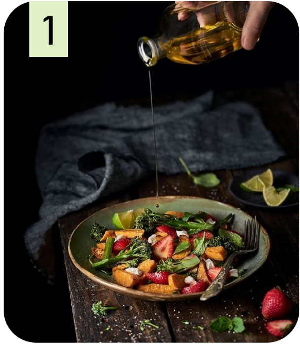
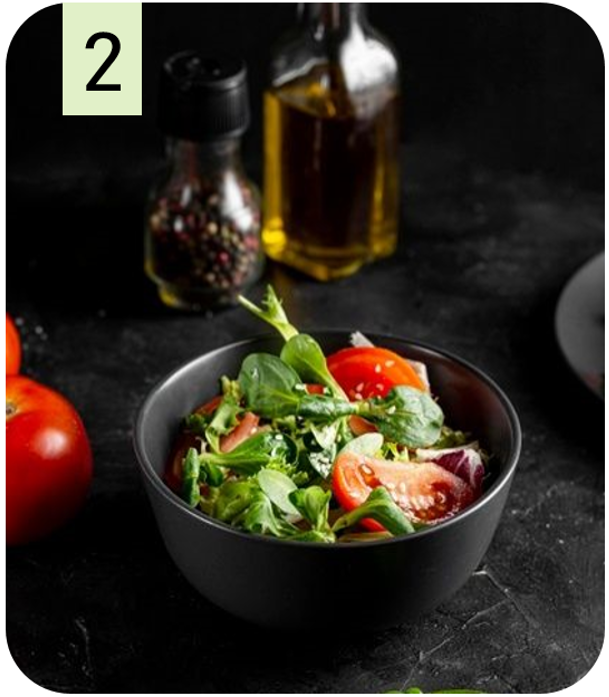
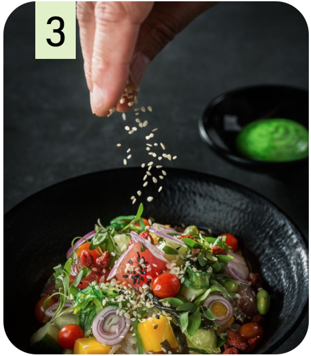

sala

nica
САЛАТЫ
Весенний взрыв
свежий микс из рукколы, шпината, помидоров черри, огурца, редиса, заправленный лимонным соусом с бальзамическим уксусом.
250г/350 руб.
Солнечный
салат из феты, свежих помидоров, огурцов, сладкого перца, маслин, заправленный оливковым маслом и бальзамическим уксусом.
250г/380 руб.
Морской бриз
салат из креветок, красной рыбы, микса салатов, авокадо, мандаринов, заправленный соусом из лайма и имбиря.
300г/550 руб.
Цезарь
классический салат с курицей, пармезаном, сухариками, рукколой, заправленный соусом Цезарь.
250г/390 руб.
Греческий
салат из фета, помидоров, огурцов, лука, оливок, черного хлеба, заправленный оливковым маслом и лимонным соком.
250г/420 руб.
Тосканский
микс салатов, помидоров, баклажанов, сладкого перца, заправленный бальзамическим уксусом с травами.
250г/370 руб.
Вкус Азии
ммикс салатов, курица, авокадо, манго, кунжут, заправленный соусом из соевого соуса, имбиря, лайма.
250г/450 руб.
Ассорти овощных закусок
набор из 5 видов свежих овощей с различными соусами (хумус, тахини, йогуртовый).
150г/300 руб.
Брускетта с томатами и базиликом
подсушенный хлеб с томатами, базиликом, чесноком, заправленный оливковым маслом и бальзамическим уксусом.
100г/250 руб.
Хумус с овощами
густой соус из нутовой пасты, кунжута, чеснока, подается с нарезанными овощами.
150г/320 руб.
Табуле
салат из булгура, петрушки, мяты, помидоров, огурцов, лука, заправленный лимонным соком и оливковым маслом.
200г/340 руб.
Тартар из овощей
мелко нарезанные овощи, заправленные пряными травами и оливковым маслом.
150г/310 руб.
ГОРЯЧИЕ БЛЮДА
Томатный с базиликом
легкий и освежающий суп из томатов, свежей зелени, базилика, чеснока.
300г/280 руб.
Овощной
суп из сезонных овощей, приготовленный на курином бульоне.
300г/290 руб.
Гаспачо
холодный суп из томатов, огурца, перца, лука, чеснока, заправленный оливковым маслом и уксусом.
300г/320 руб.
Крем-суп из брокколи
нежный и кремовый суп из брокколи, лука-порея, сливок.
300г/300 руб.
Тыквенный
суп из тыквы, сливок, специй, подается с гренками.
300г/310 руб.
Куриные котлеты с овощами
сочные куриные котлеты, приготовленные на пару, с запеченными овощами (брокколи, цветная капуста, морковь, картофель).
250г/430 руб.
Рыба на пару с овощами
нежная рыба, приготовленная на пару, с овощным гарниром (цветочную капусту, брокколи, спаржа).
200г/470 руб.
Тефтели овощные с томатным соусом
тефтели из овощного фарша, приготовленные в томатном соусе, подаются с картофельным пюре.
200г/390 руб.
Овощной рататуй
запеканка из баклажанов, кабачков, помидоров, перцев, лука, заправленная пряными травами.
250г/380 руб.
Панкейки из тыквы
сладкие панкейки из тыквы, подаются с греческим йогуртом и сезонными ягодами.
200г/360 руб.
НАПИТКИ
Фреш из моркови
250г/180 руб.
Фреш из сельдерея
250г/190 руб.
Гаспачо
300г/320 руб.
Лимонад с мятой
300г/150 руб.
Зеленый чай
250г/120 руб.
Фруктовый салат
200г/280 руб.
Мусс из манго
150г/290 руб.
Зеленый смузи
250/260 руб.
Тыквенный пирог
150г/330 руб.
Панкейки из тыквы
200г/360 руб.
Ассорти овощных закусок
200г/280 руб.
Брускетта с томатами и базиликом
150г/290 руб.
Хумус с овощами
250г/260 руб.
Табуле
200г/360 руб.
Тартар из овощей
150г/310 руб.
меню в электроном виде
БЛЮДА НЕДЕЛИ

Солнечный

Весенний взрыв
Тосканский

классический салат с курицей, пармезаном, сухариками, рукколой, заправленный соусом Цезарь.
классический салат с курицей, пармезаном, сухариками, рукколой, заправленный соусом Цезарь.
классический салат с курицей, пармезаном, сухариками, рукколой, заправленный соусом Цезарь.